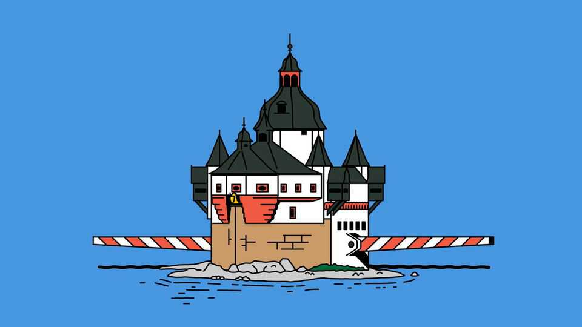

The high cost of phantom tollbooths
Freedom of navigation is worth preserving

Aug 20th 2026
Pfalzgrafenstein castle, near the village of Kaub in Germany, had a lucrative site. Situated on an island in the Rhine, the waterway that connects the most prosperous bits of western Europe, the redoubt lies on one of the river’s shallowest stretches. The tightness of the route past it meant that chains could be lowered from the battlement to prevent passage and demand payment. Pfalzgrafenstein was a toll castle, one of many along the course of the river.
Rhine tolls were a classic example of an economic rent, a payment that some entity is able to extract by making a cheap resource artificially scarce. The river cost the Electors Palatine who usually controlled the castle absolutely nothing, so the toll they earned from stopping others from making their way upriver was pure rent. In the aftermath of the latest Gulf war, there is a risk that tolls of this sort will come back. The Iranian government is considering levying a toll on ships traversing the Strait of Hormuz, through which around 20% of the world’s oil supply passed before the war began in February. Oman, on the other side of the Strait, may join in. America, too, may want to get in on the act: President Donald Trump has said that his country should consider levying fees as “THE GUARDIAN OF THE HORMUZ STRAIT”.
You might call this the political economy of the rent-seeking sea, to paraphrase the title of a paper by Anne Krueger, an American economist, published in 1974. Restrictions on trade create rents and that creates a new type of competition, in which different groups compete to capture those rents rather than doing anything productive. The trade restrictions that Ms Krueger observed in the “rent-seeking society” typically meant lobbying, bribery or legal chicanery. For charging tolls on passing maritime traffic the rent-seeking activity could be far more deadly: piracy, drones and so on. During the age of sail territorial waters ended three nautical miles (5.6km) from the coast, roughly the range of a cannon shot. It was a recognition that sovereignty could stretch only so far.
For the past couple of centuries, however, freedom of navigation has been the norm. That has typically been a public good provided by naval powers capable of asserting their sovereignty, or extending its reach beyond their shores. Tolls were abolished at Pfalzgrafenstein castle in 1867: the Prussian government controlled both sides of the river and was at last able to make good on a diplomatic promise made years earlier. The rent extraction ended. In 1868 an international treaty abolished all tolls on the Rhine. Elsewhere change was also under way. For years the Danish crown had earned much of its revenue by levying tolls on access to the Baltic Sea, until in 1857 the great powers forced the end of that money-making scheme.
On the high seas freedom of navigation was assured by hegemonic powers, able to project their authority everywhere. For much of the 19th and 20th centuries the hegemon was Britain, notably in the Persian Gulf. The British Empire used a crackdown on piracy to strong-arm emirs into signing treaties, starting in 1820; their fiefs became the Trucial States. The empire secured access to the shipping lanes without formally incorporating them. The torch passed to America after 1971, as Britain withdrew from east of Suez. The Gulf states got their independence but also fell under America’s shield. America occupied the former British naval base in Bahrain.
Keeping waterways toll-free, then, is an example of the hegemonic stability theory formulated by Charles Kindleberger, another American economist: to remain in good order, the global economy requires certain public goods. The hegemon is the only one with both the ability and the desire to provide them; it captures some of the large gains from a functioning world economy.
Kindleberger, who was writing about the Depression, was primarily concerned with financial stability, but freedom of navigation also fits the model. In his theory, and later versions, only the hegemon was able to both bear the costs of providing such goods and capture a big chunk of the benefits: “Our economic interest is in maximum freedom of movement for merchant vessels at minimum possible cost,” wrote officials in America’s State Department in 1969. Now America is retreating from that role, partly for lack of will—Mr Trump is reluctant to commit troops to the Gulf—partly for lack of ability. Cheap drones can project power much farther and more cheaply than the three-mile cannon shot of yore.
Is there a third option, neither anarchy nor hegemonic domination? Perhaps collections of other states—the “middle powers” referred to by Mark Carney, Canada’s prime minister—could club together to provide public goods. The treaty guaranteeing a toll-free Rhine was signed by a group of German states, France and the Netherlands. But a paper last year by Anwesha Banerjee, Ottmar Edenhofer and Ulrike Kornek, three economists based in Germany, sounds a note of scepticism; a more equal balance of power between countries encourages free-riding and jockeying for position. It may be unlikely, then, that middle powers would do any better at keeping Hormuz toll-free.
Then there are the truly global public goods. Whether or not there are tolls on the Rhine is, for the time being, a moot point. Europe’s extended heatwave and drought, now into its third month, has reduced the water level at Kaub to just six centimetres, below the previous record of 25cm in 2018. That is barely enough for children to paddle in, let alone for heavily laden tankers to pass. This will knock 0.2 percentage points off German GDP this year, estimates Oxford Economics, a consultancy. The danger is not only that states manage to extract rents from what was once free, but that the world is less capable of providing public goods at all. ■